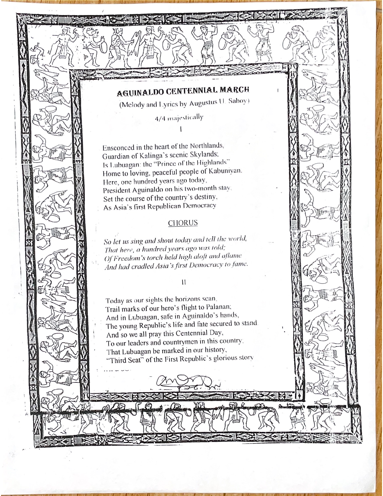

TUVYAN · Family Music Archive · Primary Source
Aguinaldo Centennial March
Melody and lyrics by Augustus U. Saboy
The surviving family-archive page presents the text of this commemorative march, with the musical direction 4/4, majestically. Its lyrics commemorate President Emilio Aguinaldo’s stay in Lubuagan and describe the community’s place in the history of the First Philippine Republic.
Original document

Reading transcription
Editorial reading of the archived page. Punctuation and wording should be checked against the facsimile; this transcription is not a newly composed or modernized version.
Opening verse
Ensconced in the heart of the Northlands,
Guardian of Kalinga’s scenic Skylands:
Is Lubuagan: the “Prince of the Highlands”
Home to loving, peaceful people of Kabuniyan.
Here, one hundred years ago today,
President Aguinaldo on his two-month stay
Set the course of the country’s destiny,
As Asia’s first Republican Democracy
Chorus
So let us sing and shout today and tell the world,
That here, a hundred years ago was told:
Of Freedom’s torch held high aloft and aflame
And had cradled Asia’s first Democracy to fame.
Final verse
Today as our sights the horizons scan,
Trail marks of our hero’s flight to Palanan;
And in Lubuagan, safe in Aguinaldo’s hands,
The young Republic’s life and fate secured to stand.
And so we all pray this Centennial Day,
To our leaders and countrymen in this country:
That Lubuagan be marked in our history,
“Third Seat” of the First Republic’s glorious story